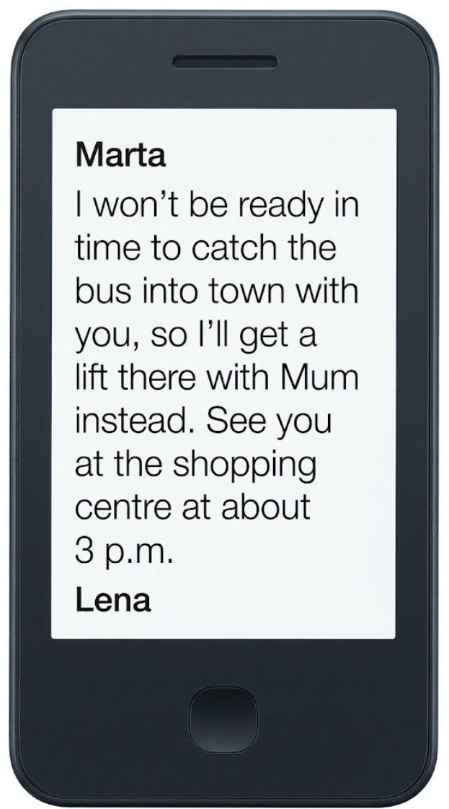
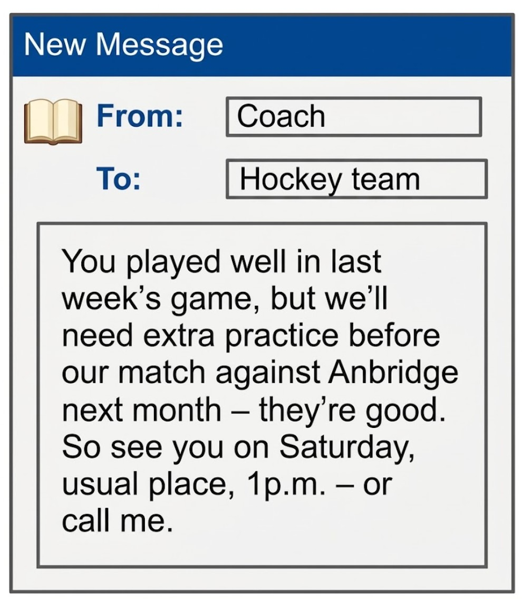
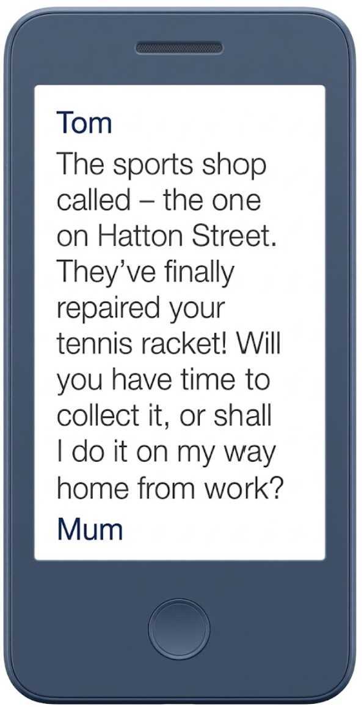
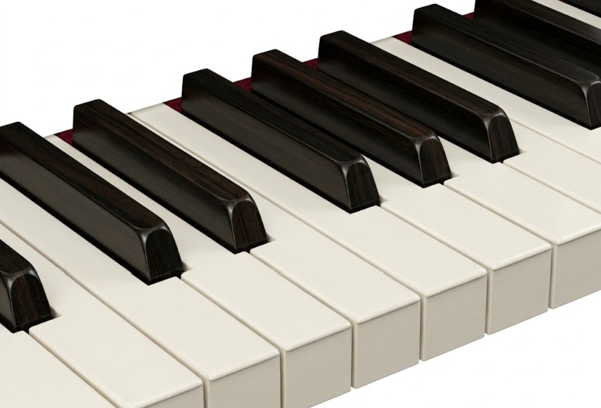
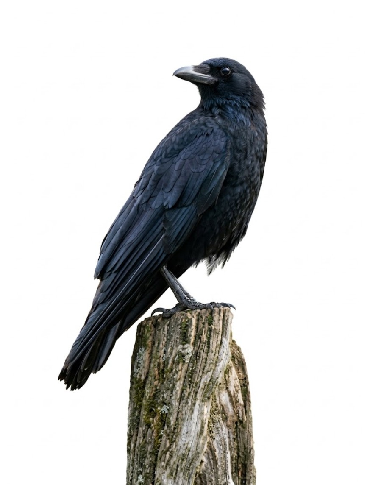
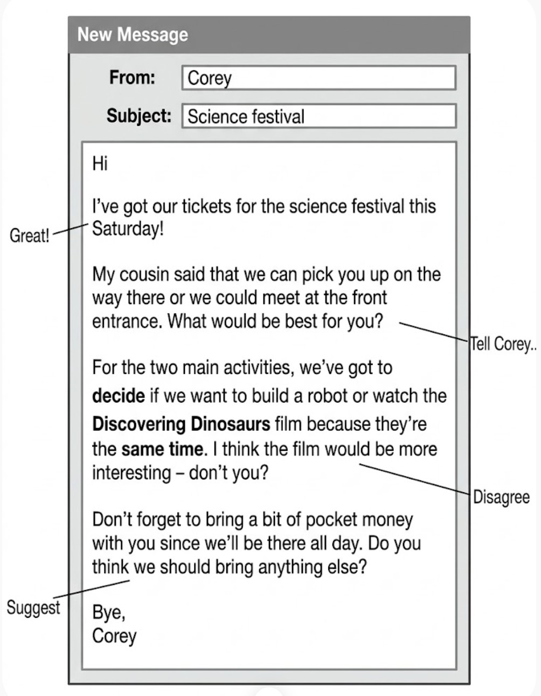
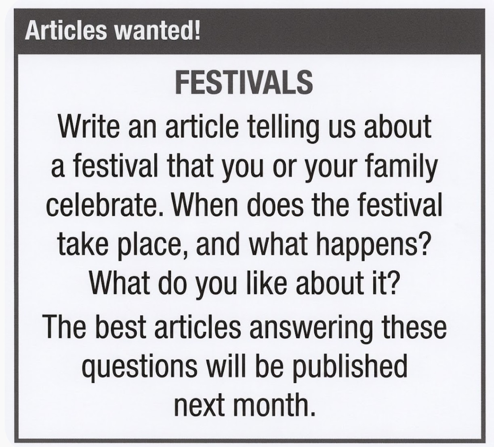

Mr. Rocha’s English Class
PET Reading and Writing 3 Worksheet

Reading Part 1
Questions 1-5For each question, choose the correct answer.
1. Lena is...

2. What does the coach want?

3. Computer use notice:
4. What does Mum want to know?

5. Store notice:
Reading Part 2
Questions 6-10The people below are all doing school geography projects and want to find a website to help them. Decide which website (A-H) would be the most suitable for the people below.
Geography Websites
6. Sandra wants to learn more about what Planet Earth is actually made of, and how much of it is covered by water. She'd also like online advice about how to organise her work.
7. Miranda wants to learn about some of the famous tourist sites in the world, and why they have become famous. She'd like to play games on the website to help her remember the information.
8. Billy needs to find out about the biggest mountains in the world, and the kind of animals living near them. He'd also like to see videos of the locations he's studying.
9. Anna wants to learn about the biggest land areas of the world, and get key facts about their geography. She'd also like advice on how to improve her map-reading skills.
10. Kristofer's country has very cold winters, so he's interested in how other people in cold countries deal with their environment. He'd like to share his experiences on line with teenagers there.
Reading Part 3
Questions 11-15Cross-country skiing in Sweden
by Jenna Walton, aged 15
Last year, Mum and I wanted to try a winter sport called cross-country skiing - travelling on skis across the countryside. And pictures of one area in Sweden, with people skiing along through forests on wonderful white snow, persuaded us that destination was a good choice. We hadn't done much skiing, though, so weren't sure how difficult cross-country skiing was, compared with skiing fast down steep mountains. But we signed up to join a group of people, of all ages, plus a guide.
We'd read about the place we went to before we left, so we knew it was close to where Sweden ends and Norway starts. And our family knew we couldn't text home, as there was no internet connection - and actually, it was relaxing to be far from anywhere, or anyone. What we hadn't realised was that from there, we'd be able to see amazing coloured lights in the sky, which appeared at certain times of year, called the Northern Lights - what a sight!
On our first day there, I hated getting up in the dark, but it meant I saw the sun come up over the forest, so I was glad I did. And sunshine was forecast for the week, I was delighted to hear! But the real problem was my 15kg rucksack, full of food and clothes - I had no idea it would weigh that much. Anyway, we skied for hours across mainly flat snow. Having special light skis was supposed to help us climb the few hills there were - although I still couldn't do it!
Finally we stopped for the night. It wasn't until we'd reached our hut that our guide mentioned we'd just crossed a frozen lake to get there - but nothing surprised us by that point! Anyway, he gave us all jobs to do - cutting fire wood and cooking food - and soon we were having dinner, made from whatever food we'd brought - a strange mix, but it tasted delicious. And everywhere was so peaceful outside that none of us stayed awake long.
Mum and I want to try another winter sports trip, maybe snowboarding. But we'll probably end up just as exhausted as we were after this trip!
11. Jenna and her mum decided to go cross-country skiing in Sweden because
12. After their arrival, what did they discover about where they were staying?
13. How did Jenna feel about the long trips through the snow on skis?
14. Regarding their accommodation, Jenna says everyone
15. What would Jenna text to a friend about her trip?
Reading Part 4
Questions 16-20The Giant Piano

A young man in New Zealand recently became famous for making one of the largest pianos ever.
Adrian Mann, who now works as a professional piano builder, started building the piano when he was just 16 years old, and made many of the parts for it himself. The piano is 5.7 metres long and is very heavy. And the keyboard actually has keys that are a metre in length. But despite this difference in size, the instrument can still be played perfectly, thanks to Adrian's hard work.
In fact, the whole thing started when Adrian became interested in the materials used for the wires inside the piano. These create the notes when they're hit. And he found that if the wires were really long, he could get an amazing sound. From there, he went on to build the whole piano.
The instrument was kept inside a church in his town for some time, before Adrian decided it was time to transfer the huge piano from the church to his workshop. So in the end, the fire service had to come and help take the instrument to its new home.
Since the move, a lot of piano players have visited Adrian to try out the piano. But Adrian says that when they arrive, some people aren't very positive about the piano. But actually, it always performs brilliantly. They soon discover that the piano can play a wide range of music, just like any normal piano.
There's been so much interest in Adrian's piano that he could probably start making and selling others just like it. So, at the moment, he has no plans to make any more.
Options:
- A. However, he put a lot of work into his original model.
- B. It's so big, you could imagine actually lying down inside it!
- C. So what gave Adrian the idea to create such a huge piano?
- D. They expect that the instrument won't sound very good.
- E. But things weren't always that simple.
- F. That's much larger than on a normal-sized piano.
- G. Most of them were surprised by the wonderful result.
- H. But he soon found he couldn't move it out on his own.
Reading Part 5
Questions 21-26Clever Birds

Reading Part 6
Questions 27-32For each question, write the correct word. Write one word for each gap.
My thoughts on how to write
by Sarah Beecham
Welcome to my blog! That's for anyone who's new and has visited this site before! But if you seen some of my blogs, then you'll know like sharing ideas about creative writing and how to do it.
At the moment, I'm sitting at my desk in my room, I do most of my writing. I love writing stories, but not every day. I'll often update my diary or something, too - and this blog, course ! But I have a notebook of things I would like to include in my writing and new words I like the sound of.
But I recently discovered the most important thing is just to going once you've started writing. And doesn't matter how bad your writing is at the beginning, because you can always go back and make improvements. In fact, that's the part I enjoy most!
Writing Part 1
Question 1You must answer this question. Write your answer in about 100 words.
Read this email from your English-speaking friend Corey and the notes you have made. Write your email to Corey using all the notes.

Writing Part 2
Questions 2 or 3Choose ONE of these questions. Write your answer in about 100 words.
You see this notice on an international English website for young people.

Your English teacher has asked you to write a story. Your story must begin with this sentence:
"As my friend and I arrived at school yesterday morning, we saw something incredible!"
Exam Results
Student Name - Date